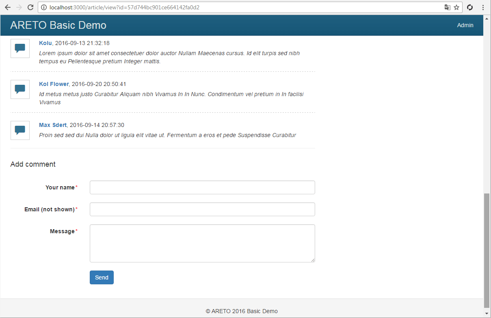

Comment model
The Comment class defines a model of commentary to article.
Users can comment without authentication.
But any comment will be published after moderation only.
Each comment has a few conditions:
STATUS_PENDING- comment is awaiting moderation.STATUS_APPROVED- approved comment.STATUS_REJECTED- rejected comment.
The BEHAVIORS static property contains behaviors that will be assigned to an instance of class.
Behavior defines a set of event handlers of target model and associated functionality.
In this case, the timestamp behavior sets the current time
to createdAt, updatedAt attributes when you create or edit a comment.
model/Comment.js
Every new comment has the status of «Pending moderator» by default.
model/Comment.js
Set content of comment as a model header.
model/Comment.js
Following methods are required to check a comment status.
model/Comment.js